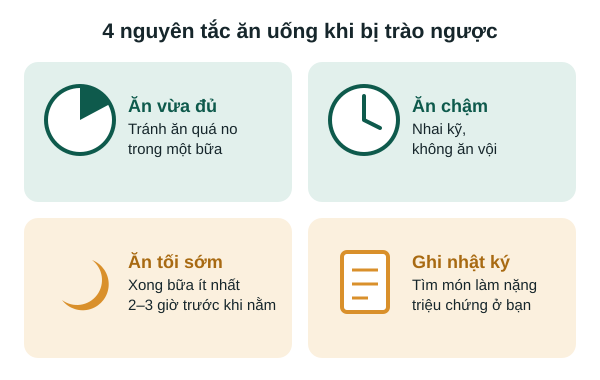
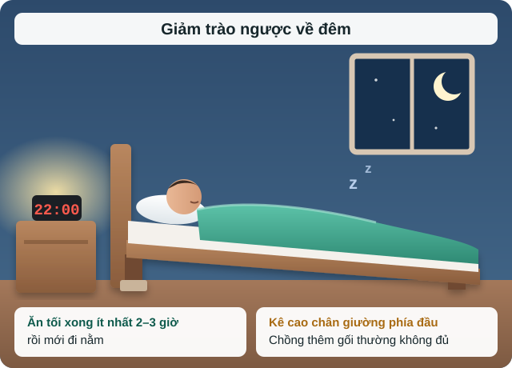

Chế độ ăn và thói quen sinh hoạt có thể ảnh hưởng rõ rệt đến triệu chứng trào ngược. Tuy nhiên, không có một thực đơn duy nhất phù hợp với tất cả người bệnh GERD. Mục tiêu là nhận diện yếu tố làm khởi phát triệu chứng ở từng cá nhân, duy trì cân nặng hợp lý và tránh những bữa ăn hoặc thói quen làm tăng trào ngược.
Đọc thêm: GERD là gì và cách nhận biết
1. Nguyên tắc ăn uống
Ăn lượng vừa phải, tránh ăn quá no trong một bữa.

Bốn nguyên tắc ăn uống đơn giản cho người bị trào ngược. Bấm vào hình để xem lớn hơn. Ăn chậm, nhai kỹ; hạn chế ăn vội hoặc ăn sát giờ ngủ.
Sắp xếp bữa tối đủ sớm, cố gắng kết thúc bữa ăn ít nhất 2–3 giờ trước khi nằm.
Ưu tiên bữa ăn cân đối, đủ đạm, rau, trái cây phù hợp và tinh bột; không tự loại bỏ nhiều nhóm thực phẩm nếu không có lý do.
Theo dõi thực phẩm gây triệu chứng bằng nhật ký ăn uống thay vì kiêng khem theo danh sách truyền miệng.
2. Thực phẩm nào nên cân nhắc hạn chế?
Một số thực phẩm/đồ uống có thể làm triệu chứng nặng hơn ở một số người:
Món nhiều chất béo, chiên rán hoặc khẩu phần quá lớn.
Cà phê, trà đậm, nước tăng lực và đồ uống chứa caffeine nếu người bệnh nhận thấy liên quan.
Chocolate, bạc hà, thức ăn cay, cà chua hoặc trái cây có tính acid nếu chúng kích hoạt triệu chứng.
Nước có gas, rượu bia.
Các món ăn quá muộn hoặc nhiều dầu mỡ vào buổi tối.
Không phải ai bị GERD cũng cần kiêng toàn bộ các thực phẩm trên. Bằng chứng về việc loại bỏ đồng loạt từng món còn không đồng nhất; việc hạn chế nên dựa trên mối liên quan thực tế với triệu chứng của mỗi người.
3. Nên ăn gì?
Không có thực phẩm nào có thể chữa khỏi GERD. Người bệnh có thể lựa chọn thực phẩm dễ dung nạp, khẩu phần vừa phải và chế biến ít dầu mỡ:
Rau củ nấu chín hoặc hấp, tùy khả năng dung nạp.
Trái cây ít gây triệu chứng ở bản thân người bệnh.
Ngũ cốc, cơm, khoai và các nguồn tinh bột phù hợp.
Đạm nạc như cá, thịt gia cầm bỏ da, trứng hoặc đậu phụ nếu dung nạp tốt.
Sữa và chế phẩm sữa ít béo nếu không gây đầy bụng hoặc trào ngược.
Cách chế biến hấp, luộc, kho, nướng ít dầu thường dễ kiểm soát lượng chất béo hơn món chiên ngập dầu.
4. Thói quen sinh hoạt quan trọng không kém thực phẩm
Giảm cân nếu thừa cân hoặc béo phì. Đây là biện pháp có bằng chứng hỗ trợ cải thiện triệu chứng GERD.

Ăn tối sớm và kê cao đầu giường giúp giảm trào ngược về đêm. Bấm vào hình để xem lớn hơn. Không nằm ngay sau ăn; tránh cúi gập người hoặc vận động gắng sức ngay sau bữa ăn lớn.
Nếu thường xuyên trào ngược ban đêm, kê cao đầu giường bằng cách nâng phần đầu giường hoặc dùng dụng cụ kê phù hợp. Chỉ chồng thêm gối thường không tạo được độ nghiêng ổn định.
Nằm nghiêng trái có thể giúp giảm trào ngược ban đêm ở một số người.
Ngừng hút thuốc và hạn chế rượu bia.
Mặc quần áo thoải mái, tránh tạo áp lực quá mức lên vùng bụng.
5. Gợi ý cách xây dựng thực đơn một ngày
Đây là ví dụ tham khảo, không phải chế độ ăn điều trị bắt buộc:
Bữa sáng: cháo/yến mạch hoặc bánh mì, kèm trứng; đồ uống không caffeine nếu cà phê gây triệu chứng.
Bữa phụ: một phần trái cây người bệnh dung nạp tốt.
Bữa trưa: cơm, cá hấp hoặc thịt nạc, rau nấu chín.
Bữa phụ chiều: sữa ít béo hoặc thực phẩm nhẹ nếu phù hợp.
Bữa tối: khẩu phần vừa phải gồm tinh bột, đạm nạc và rau; ăn sớm, cách giờ ngủ ít nhất 2–3 giờ.
Nếu một món ăn cụ thể gây triệu chứng lặp lại, hãy ghi nhận lượng ăn, thời điểm và biểu hiện để trao đổi với bác sĩ/dinh dưỡng viên.
6. Những sai lầm thường gặp
Kiêng quá nhiều loại thực phẩm dẫn đến thiếu năng lượng hoặc mất cân bằng dinh dưỡng.
Uống sữa hoặc dùng nước kiềm với kỳ vọng “trung hòa acid” và chữa khỏi bệnh.
Ăn ít cả ngày rồi ăn bữa tối rất lớn.
Nằm ngay sau ăn hoặc chỉ kê nhiều gối khi ngủ.
Tự ngừng thuốc đã được kê, hoặc tự dùng thuốc kháng acid/PPI kéo dài mà không đánh giá lại.
Chế độ ăn hỗ trợ kiểm soát triệu chứng nhưng không thay thế thuốc hoặc thăm khám khi có chỉ định.
Đọc thêm: các nhóm thuốc điều trị GERD và cách sử dụng an toàn
Câu hỏi thường gặp
Người bị trào ngược dạ dày nên ăn gì?
Ưu tiên khẩu phần cân đối, lượng vừa phải, thực phẩm dễ dung nạp và cách chế biến ít dầu mỡ. Không có một thực đơn duy nhất phù hợp với tất cả.
Bị GERD có phải kiêng cà phê và trái cây chua hoàn toàn không?
Không nhất thiết. Chỉ nên hạn chế những món thực sự làm triệu chứng nặng hơn ở từng người.
Ăn tối trước khi ngủ bao lâu?
Nên kết thúc bữa ăn ít nhất 2–3 giờ trước khi nằm.
Tài liệu tham khảo
Hội Khoa học Tiêu hóa Việt Nam. Hướng dẫn chẩn đoán và điều trị bệnh trào ngược dạ dày – thực quản. 2025 (khuyến cáo về giảm cân, kê cao đầu giường, thay đổi chế độ ăn và lối sống).
Katz PO, et al. ACG Clinical Guideline for the Diagnosis and Management of GERD. Am J Gastroenterol. 2022.
Yadlapati R, et al. AGA Clinical Practice Update on the Personalized Approach to the Evaluation and Management of GERD. Clin Gastroenterol Hepatol. 2022.
Lưu ý y khoa: Bài viết cung cấp thông tin giáo dục sức khỏe, không thay thế thăm khám, chẩn đoán hoặc điều trị cá nhân. Người đọc cần trao đổi với nhân viên y tế trước khi thay đổi thuốc hoặc kế hoạch điều trị.